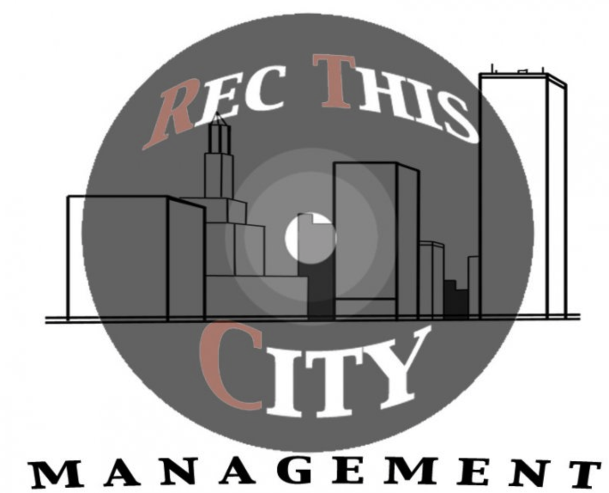

Music Management/Digital Marketing
Music and Digital Media Consulting
Jared maintains consulting relationships within a variety of industries, such as Music and Digital Media/Branding. Rem aperiam, eaque ipsa quae ab illo inventore veritatis et quasi architecto beatae vitae dicta sunt explicabo. Nemo enim ipsam voluptatem quia voluptas sit
MoodSwing
Management for (Austin Millz, Benzi, Brenmar, Coco & Breezy, Dirty South Joe, Enferno, Esentrik, Shiftee, Sliink, Zak Leever, TWRK)
Uncharted Play
Jared worked directly with CEO Jessica Matthews, eventually promoted twice to Senior Partnerships & Logistics Manager, where he managed International Business Development, and maintained relationships with external partners relating to Supply Chain, Business Development, Product Development and Infrastructure.
Young Money Entertainment
At Young Money, Jared was a direct assistant to recording artist Lil Wayne. Jared’s focus was to manage all intraday needs, as he accompanied Wayne to studio sessions, concerts, talk-shows, meet and greets etc. Jared traveled with Lil Wayne side by side for just under a year, learning every day. In 2015, Jared parted ways with Young Money to go work with a social venture startup, named Unchartered Play.

RecThisCity
Jared managed many artists, most notably, Jitta on the Track. Jared grew Jitta’s following to roughly 50,000+ fans, and Jitta created songs with various artists such as Wacka Flocka Flame and Chris Webby, as well as performed shows with artists such as the late Mac Miller, Big Sean and French Montana.
Jared utilized grassroots digital marketing to build an organic online fan-base gaining more than 2,000,000+ streams across Spotify, Apple Music, and YoutTube for Jitta.